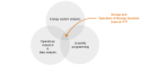
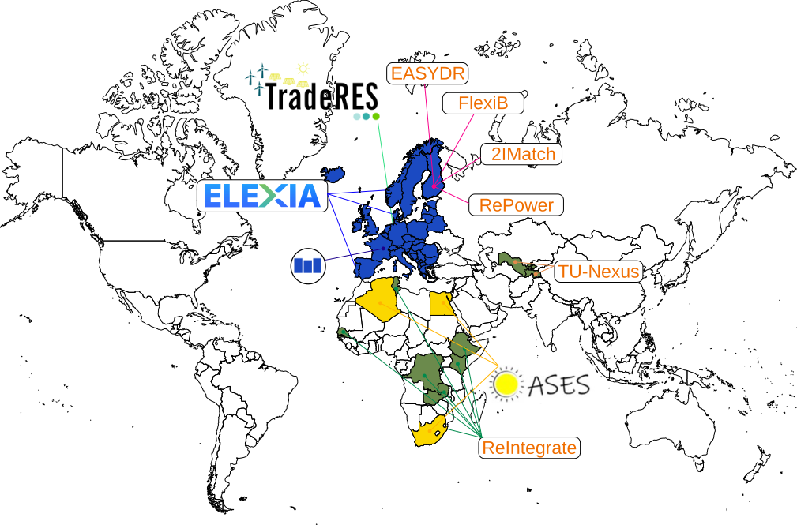

The Design and Operation of Energy Systems Team at VTT
who are we?
'Design and Operation of Energy Systems' team at VTT Finland is developing state-of-the-art open optimization models for 100% sustainable energy systems
We operate at the sweet spot between where energy system expertize meets mathematics and programming. Our team consist of nine researchers with years of experience on creating cutting-edge energy system modelling. Our work is in research projects for the benefit of the Finnish and European public authorities, as well as the Nordic industry.

Our current research project
Here are some of our largest ongoing research projects:

Some of our reference work includes:
2IMatch
Strategic Research funding on the Just Energy Transition where our team is looking into the integration of energy grids through the different layers of the energy system, from local energy grids to the national network (when applied). It also assesses the different energy and carbon policy and their impact on the energy market to promote a just energy transition (find out more about the 2IMatch project)
EasyDR
Enabling demand response through easy to use open source approach (EasyDR) is a research project where we are developping an affordable and open source energy management system for homes. It utilises the power of our VTT tool Predicer (see more in our tools lists) to manage and plan the utilisation of energy on different markets (heat & power but can accomodate other energy such as natural gas). Ultimately, the product will be accessible through the home assistant interface and run on a raspberry pie. (find out more about the EasyDR project)
Elexia
The Elexia focuses on the development of the energy system towards more digitalisation, in this project, we are continuing the development of operational tools and planning tools to 3 different pilot sites. The project will provide a standardised digital service platform where data can be brokered and unified through multiple software/model and smart gateways deployed on the fields.
FlexiB
FlexiB project is funded by the Research Council of Finland (previously known as Academy of Finland) and investigate the flexibility of buildings in the energy system. With the use of our tool Backbone, we are developing a building stock model to evaluate the flexibility of the electrically heatd buildings in Finland. Further development will include non-electric buildings.
Mopo
Mopo is a 4-years HEU project coordinated by our team. In this project and in collaboration with the project partners (see project website) we aim at combining component tools producing input data to create model-ready datasets, scenario and workflow management, and medium and long-term energy system planning. The aim is to provide a user-friendly, open-source and validated set of tools to benefit decision-makers in network operation, industry and public authorities.
OASES
OASES is one of the projects where we support the energy transition in developing countries. In this project we work with Algeria, Egypt and South Africa as case studies and local research institutions using IRENA FlexTool model that we are developing for IRENA.
ReIntegrate
RePower
Hand in hand with the Finnish Environmental Institute (SYKE), we are working on setting up the roadmap for Finland where scenario are being generated and tested using Backbone.
TradeRES
An EU project where a 100% renewable energy system for Europe is being tested and developed using Backbone.
TU-Nexus
TU-Nexus is another project that uses IRENA FlexTool model to support the energy transition in Uzbekistan and Tajikistan. This project goes beyond the typical energy modelling work that we do to include the water-energy-land nexus in the deision making and operation of the hydropower system. This project is funded by the Finnish Ministry of Foreign Affairs.
List of publications
For full list of our ongoing and past projects, please visit: publication in VTT
Contact Us
Want to know more? Contact us at does-info@vtt.fi